Quan el nostre director Pepe Serra es va acomiadar de l’equip del museu ens va dir: “Hem fet en 5 anys la feina de 10″. I aquí un petit recull dels projectes que s’han dut a terme durant els seus anys de direcció.
· Investigació i desenvolupament d’exposicions que aporten coneixement i valor afegit
Devorar París “Picasso [...]
Quan el nostre director Pepe Serra es va acomiadar de l’equip del museu ens va dir: “Hem fet en 5 anys la feina de 10″. I aquí un petit recull dels projectes que s’han dut a terme durant els seus anys de direcció.
· Investigació i desenvolupament d’exposicions que aporten coneixement i valor afegit
Devorar París “Picasso 1900-1907” (2011). Autoretrat amb paleta. Picasso. París, 1906 | Picasso davant Degas (2010)
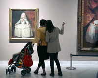
Oblidant Velázquez. Las Meninas (2008). Foto: Lafotogràfica | Lee Miller. Picasso en privat (2007)
· Entrada de la creació contemporània al museu
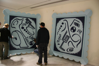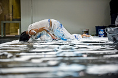
Rodney Graham. Possible Abstractions (2010) | Cicle de performances
· Nova instal·lació de la sèrie Las Meninas presentades de forma cronològica
 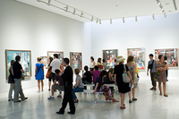
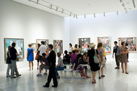
· Donació d’un esbós de Las Meninas per part de Catherine Hutin filla de Jacqueline Picasso, al museu
| 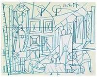 |
Pablo Picasso Esbós per a Las Meninas Canes, 16 d’agost de1957 Llapis de color sobre paper 24 x 30,5 cm Donatiu Catherine Hutin MPB 113.292
|
· Increment de préstecs internacionals per tal d’estar present en els projectes expositius de major importància relacionats amb Picasso arreu del món:
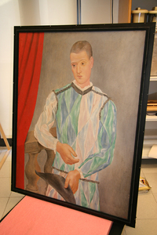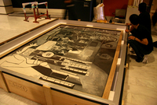
Preparatius pel viatge de l’Arlequí i Las Meninas. Col·locació de l’obra a la caixa de transport
- L’Arlequí ha viatjat a Roma per a l’exposició “Picasso 1917-1937: l’Arlecchino dell’Arte” (2008-2009) i a Los Angeles County Museum of Art (2010-2011).
- Set quadres de la sèrie Las Meninas, la Nana, un autoretrat i els retrats de Sabartés i Casagemas han estat prestats a les Galeries nationales du Grand Palais de París per a l’exposició “Picasso et les Maîtres” Las Meninas també han anat a la National Gallery de Londres (2008-2009).
- L’espera (Margot) ha estat prestada a The Metropolitan Museum of Art de Nova York, al The Art Institute of Chicago i al Musée d’Orsay de París (2006-2007).
· Renovació de la web i desenvolupament de l’estratègia i les accions de comunicació 2.0 i les xarxes socials, que van obtenir el premi Best of the Web als EUA, 2010
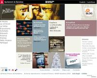
· Preparació de la col·lecció online i bolcatge a la web
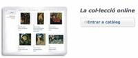
· Millores en la gestió de públics amb la inclusió de la venda d’entrades online, la definició de franges horàries per grups i la posada en marxa del Carnet del Museu Picasso
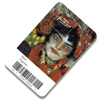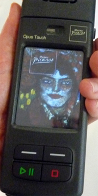
· Edició d’una nova audioguia multimèdia en vuit idiomes
· Rrestauració dels sostres del Palau Aguilar amb el descobriment de policromies medievals i realització d’un estudi radiogràfic de la col·lecció
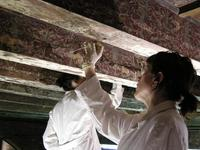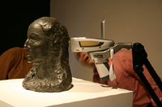
Restauració del sostre del Palau Aguilar | Aplicació de la pistola de fluorescència de raigs X al Cap de dona (Fernande Olivier)
· Creació del nou Centre de Coneixement i Recerca en un edifici de nova construcció a la plaça Sabartés
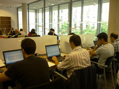
Interior del Centre de Coneixement i Recerca durant unes jornades. Foto: Conxa Rodà
· Creació del Servei Educatiu i treball del museu per esdevenir un recurs educatiu per a tots els nivells
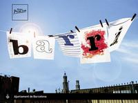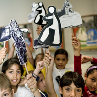
Projectes de barri | Visita dinamitzada sobre Las Meninas a primària
· Increment de la programació d’activitats entorn de la col·lecció i de les exposicions temporals. Desenvolupament de projectes en col·laboració amb altres entitats i aproximació al barri
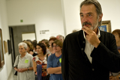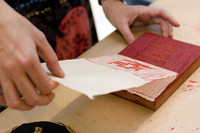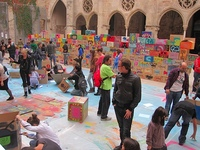
Parlem de pintura amb Frederic Amat. Foto: Jordi Mota | Taller de xilografia i gravat japonès. Foto: Jordi Mota | Big Draw. La Festa del Dibuix. Foto: Bárbara Piffre
· Posada en marxa i impartició del postgrau en Gestió Museística: “Com es fa funcionar un museu” amb col·laboració amb l’Institut d’Educació Contínua (IDEC) de la Universitat Pompeu Fabra (UPF)
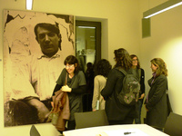
· Llançament d’una nova línia editorial amb les col·leccions Abstract i Focus
 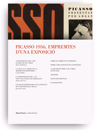
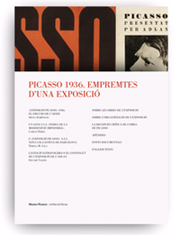
L’Abstract és un fullet que acompanya algunes exposicions temporals del museu. Inclou un resum dels àmbits, una selecció de les peces més importants i algunes cites procedents del catàleg. La col·lecció Focus està formada per una sèrie d’opuscles que acompanyen les exposicions de petit i mig format, l’objectiu de les quals és aprofundir en l’anàlisi d’obres concretes de les col·leccions del museu.
· Creació d’una Xarxa Picassiana en col·laboració amb d’altres institucions que gestionen espais dedicats a l’artista entre les que destaquem l’ajuntament Gósol, el centre Picasso d’Horta de Sant Joan, el Museu de Cadaqués i la Fundació Palau de Caldes d’Estrac.
I també tenim projectes en procés molt avançat!
· Procés cap a creació d’una Fundació Museu Picasso Barcelona
· Nova ordenació i presentació de la col·lecció permanent
· Edició d’una nova guia en paper del museu
· Producció d’un audiovisual de 50 min. Picasso i Barcelona
Potser sí que hem fet en 5 anys feina de 10. Què en penseu?
Redacció del Museu


 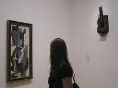
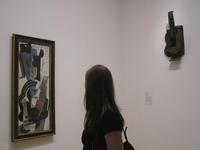

 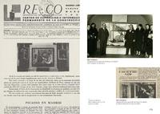
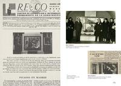